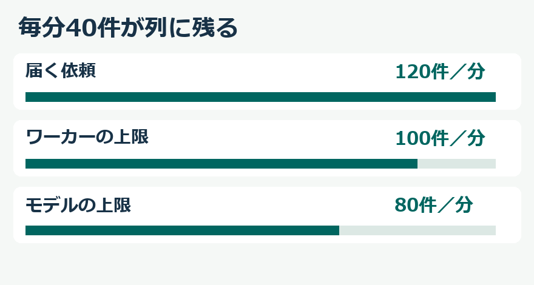
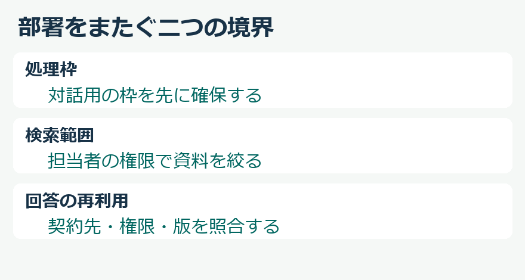
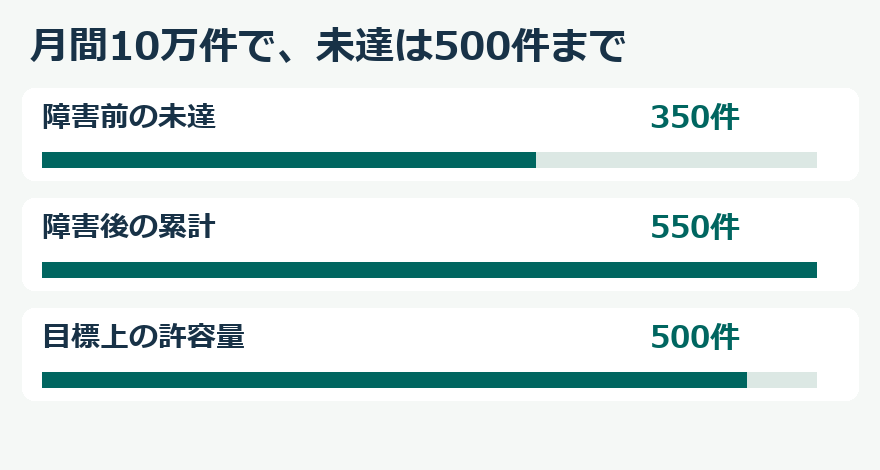
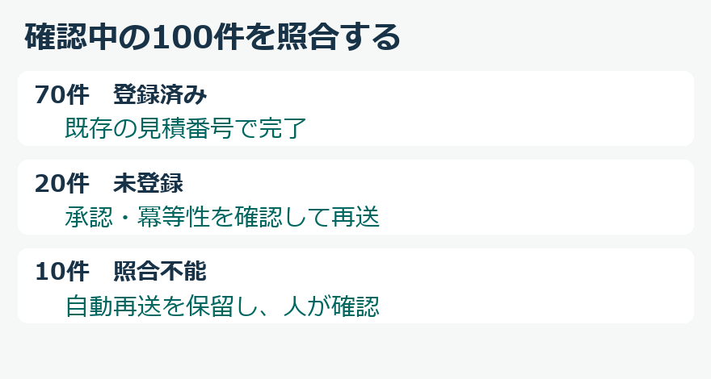
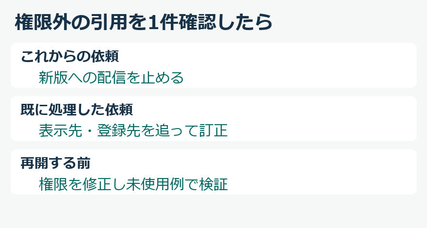
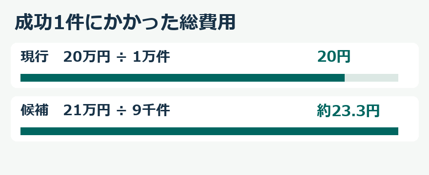

音声で学ぶ
再生すると全章が続きます。問いのあとに考える間が入り、そのまま解答を聴けます。
全10分56秒 音声を保存
章を選んで聴く
音声原稿
月末の見積を担当すると想像してください。毎分百二十件の依頼が、十五分間続きます。仕事をさばくワーカーは十個。一件に六秒かかるので、一つのワーカーは毎分十件、十個なら百件です。ところが、もう一つ上限があります。モデルが一分間に読めるのは十六万トークン。一件に二千トークン使うと、毎分八十件で枠が尽きます。百二十件届いて八十件しか終わらない。毎分四十件ずつ待ち行列が伸びます。
ここからはあなたの担当です。月末の当番です。毎分120件が到着し、ワーカーは毎分100件、モデルは毎分80件まで処理できます。この状態が15分間続く想定です。ワーカーを倍増する提案に返答してください。15分後の待ち件数を予測し、翌月の負荷試験で見る記録を一つ決めましょう。
モデルの上限が毎分80件なので、ワーカーだけ増やしても毎分40件、15分で600件が残ります。一括依頼をピーク外に移し、同じ負荷で最古の依頼の待ち時間が縮むか確かめます。 次に同じ場面に出会ったら、「処理量は最も小さい上限で決まる」と思い出してください。

図を原寸で開く（新しいタブ）120件 − 80件 ＝ 40件。15分で600件が待つ。 音声原稿
営業部が一万件の見積をまとめて依頼しました。同じ列の末尾に、別部署が今すぐ必要とする一件が並びます。全社で処理枠を共用するなら、対話用に枠を取り置き、一括処理と列を分けます。共有するときはデータにも境界が必要です。同じ製品でも、南社だけの特別価格を北斗社の見積に流用すると契約条件が漏れます。検索の前に利用者の権限を確かめ、再利用する回答にも適用先と資料の版を結び付けます。
ここからはあなたの担当です。月末の混雑対策を始めたところ、営業部が一括処理で枠を使い切りました。同じ時刻に別部署の画面で、閲覧できないはずの契約価格も見つかりました。当番が先に止める処理を一つ選んでください。どの記録で影響範囲を調べ、混雑の回復は何で判定しますか。
影響する価格表示と保存済み回答の再利用を止めます。閲覧主体、参照した資料版、依頼番号で実際の表示先を調べます。混雑は部署別の待ち時間で追います。待ち時間が戻っても、価格の閲覧権限は別に再検証します。 次に同じ場面に出会ったら、「処理枠と閲覧権限を分ける」と思い出してください。

図を原寸で開く（新しいタブ）混雑には処理枠、価格の漏えいには閲覧制御が効く。 音声原稿
サーバーが正常と答えていても、担当者の手元に見積が届かなければ仕事は止まります。そこで、受け付けた依頼のうち、六十秒以内に有効な出典付きの下書きが完成した割合を測ります。月に十万件を受け付け、目標が九十九・五パーセントなら、未達にできるのは五百件までです。これは対応の優先順位を決める尺度になります。出典が実際に説明を裏づけるかは、人が抜き取って別に確かめます。
ここからはあなたの担当です。月間10万件で目標99.5パーセント。未達の許容量は500件です。既に350件の未達があり、今朝さらに200件が時間内に下書きを受け取れませんでした。あなたが当番に送る第一報を声に出してください。累計の未達、影響範囲を特定する次の記録、次報の時刻を含めます。
例えば、累計未達は550件、想定の月間許容量を50件超えた、と伝えます。部署別の受付と完成時刻を照合し、継続中の影響を調査中、次報は15分後と明記します。次報では実際の分母と集計期間も示します。 次に同じ場面に出会ったら、「当番に利用者への影響を伝える」と思い出してください。

図を原寸で開く（新しいタブ）350件に200件が加わり、許容量を50件超えた。 音声原稿
見積の登録要求を送った直後に通信が切れました。要求が届かなかった場合も、登録は済んで返事だけ失われた場合も、こちらからは同じタイムアウトに見えます。下書きを保存し、登録先への新しい呼び出しを一時停止します。復旧時には、承認した版と操作番号を手がかりに、登録先の見積番号を照会します。
ここからはあなたの担当です。障害の第一報を出しました。登録確認中は100件。操作番号を照合すると、70件は登録済み、20件は未登録、10件は照合不能でした。復旧担当に、三つのグループの扱いを指示してください。再送できる条件と、当番を交代してよいと判断する記録も挙げます。
70件は既存番号で完了。20件は承認が有効で重複防止が効く場合に少量ずつ再送。残る10件は人に割り当てます。100件それぞれに見積番号か未解決の担当者と次の確認時刻を残せば、交代後も追跡できます。 次に同じ場面に出会ったら、「登録不明を三つに分ける」と思い出してください。

図を原寸で開く（新しいタブ）同じタイムアウトでも、登録結果で復旧手順が変わる。 音声原稿
新モデルは平均で二秒速くなりました。全社に配る前に、標準価格の案件、特約の案件、金額を保留すべき案件を分けて試します。過去の依頼を再生するときは、登録や送付が本当に実行されないよう模擬応答にします。次に少数の利用者だけに配信し、使ったモデル、指示文、価格表の版を記録します。停止条件は配信前に決めます。今回は権限外の資料を一件でも引用したら停止です。
ここからはあなたの担当です。復旧後、少数部署に新版を配信しました。100件で平均2秒速くなりましたが、権限外の特約を1件引用しました。配信前に合意した即時停止条件に該当します。新版を止めた直後です。既に処理した見積をどう調べますか。次回の配信前に、どんな案件で再検証しますか。
依頼番号から利用者、資料版、表示先、登録先まで追い、影響した見積を訂正します。再現例を回帰テストに残し、別の未使用案件でも権限外の資料が検索候補から除外されることを確かめてから少数配信を再開します。 次に同じ場面に出会ったら、「切り戻し後も過去の結果を追う」と思い出してください。

図を原寸で開く（新しいタブ）切り戻しは将来の処理に効く。過去の見積には訂正が必要。 音声原稿
今の運用では推論と検索に十二万円、人の確認に八万円かかり、一万件が正しく完了します。合計二十万円を一万件で割ると、一件二十円です。新しい案では推論と検索が九万円に下がりました。一方、人の確認が十二万円に増え、正しく完了したのは九千件でした。
ここからはあなたの担当です。運営会議です。現行は推論と検索に12万円、人の確認に8万円、成功1万件。新案はそれぞれ9万円と12万円で、成功9千件でした。予算担当に、採否と根拠を一文で伝えてください。次の改善で人の負担が増えた理由を確かめるには、どの記録を集めますか。
現行は成功1件20円、新案は約23.3円なので、費用削減としては見送ります。部署別に差し戻し理由と確認時間を記録します。最初の章で見た混雑も併せて確認し、安い構成が待ち時間や手直しを増やしていないか同じ条件で比較します。 次に同じ場面に出会ったら、「成功した一件の費用で比べる」と思い出してください。

図を原寸で開く（新しいタブ）推論費が下がっても、人の確認を含めると割高になる。